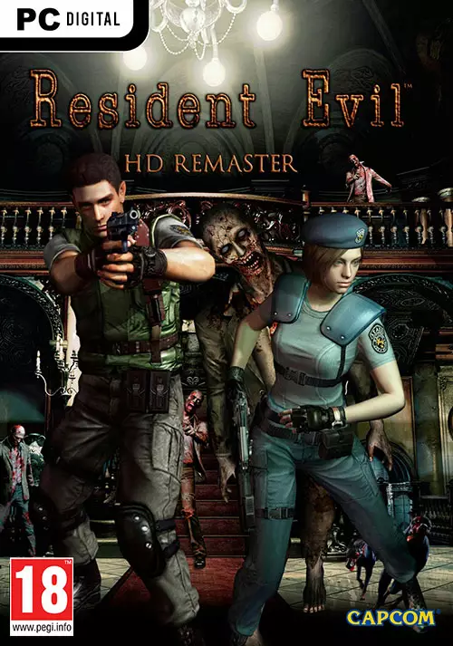
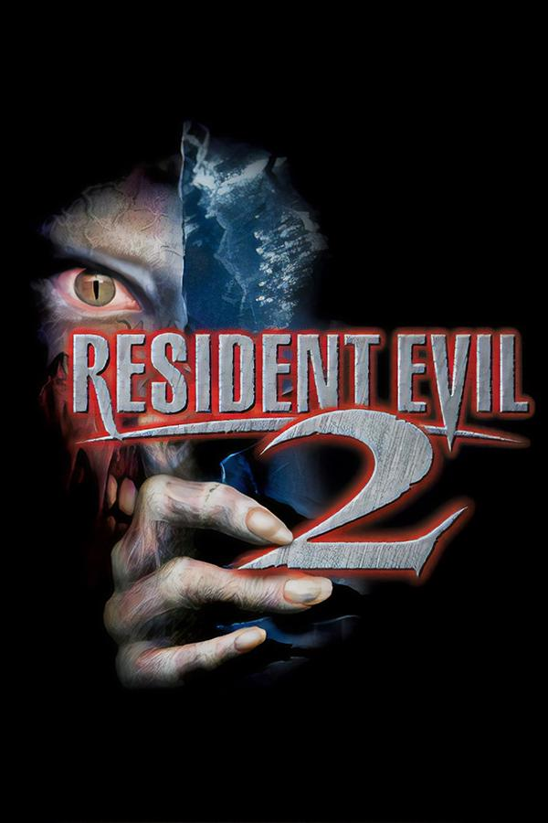
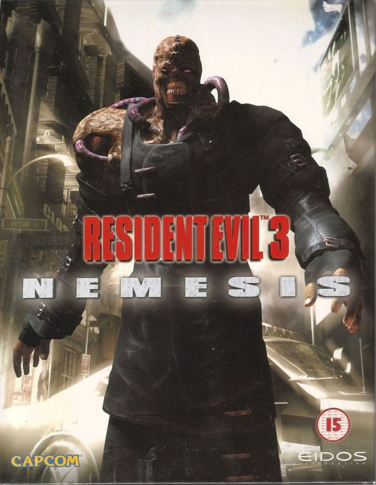
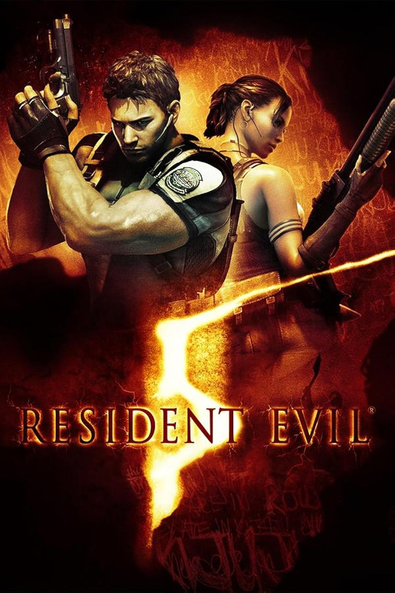
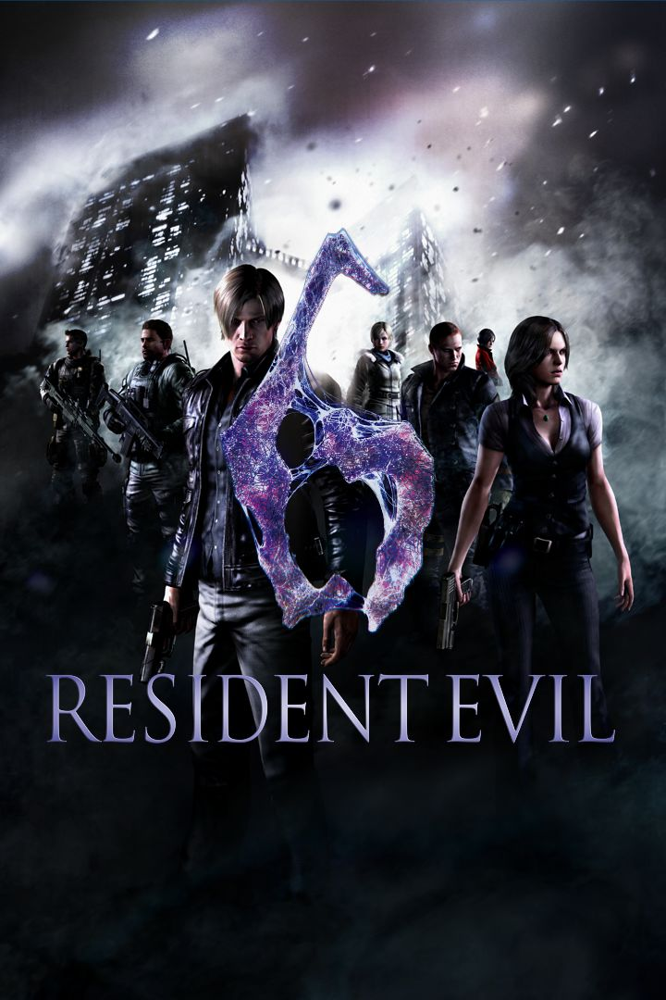
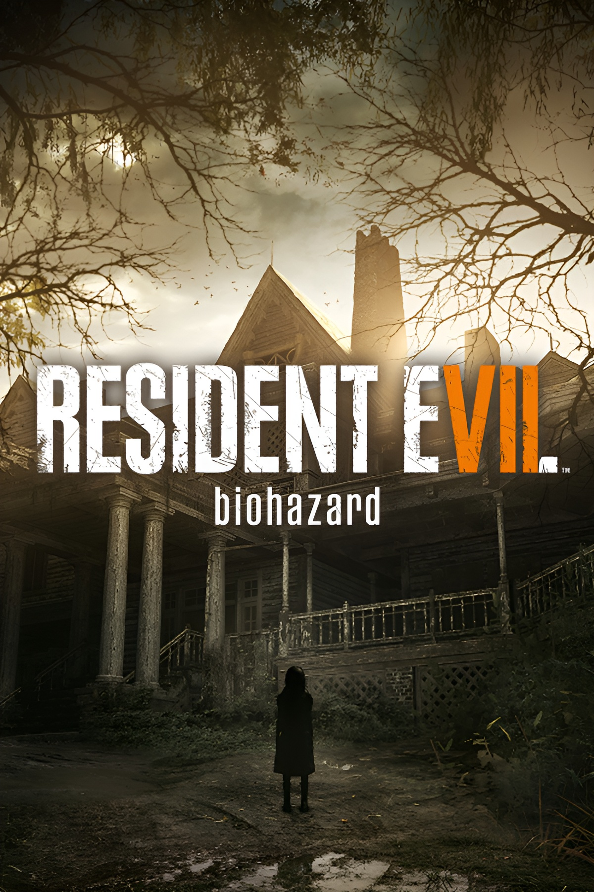
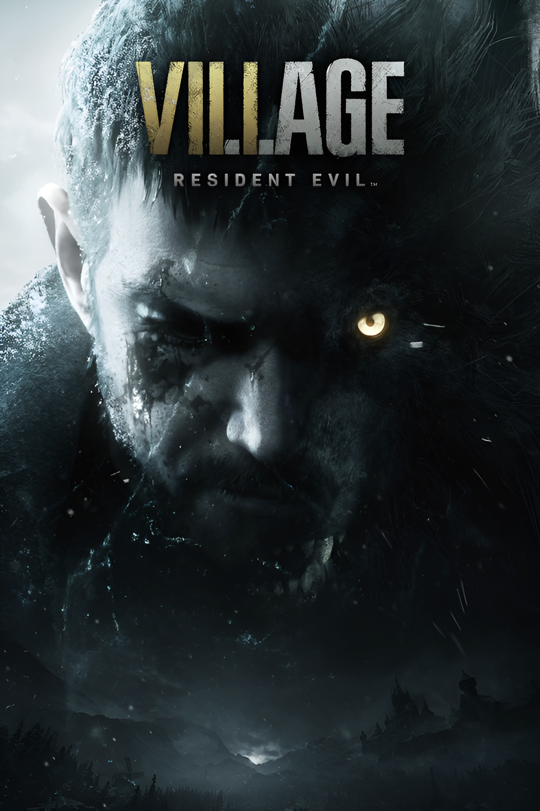

resdint evil
Introduction to the Story of Resident Evil:
The Resident Evil series is one of the most iconic and longest-running survival horror franchises in video game history. First released in 1996 by Capcom, it opened the door to a dark world filled with secrets, bioengineering experiments, and unimaginable horrors.
The story centers around the outbreak of a deadly virus known as the T-Virus, created by the powerful pharmaceutical company Umbrella Corporation. This virus turns humans and other living beings into terrifying monsters. As the events unfold, players are drawn into a desperate fight for survival while uncovering the shocking truth behind the Umbrella Corporation’s experiments.
The series also includes several main installments, which are
- Resident Evil (1996)

- The story begins in the Spencer Mansion, where the S.T.A.R.S. team uncovers Umbrella Corporation’s dark experiments
- Resident Evil 2 (1998)

- Takes place in Raccoon City, introducing Leon S. Kennedy and Claire Redfield as they try to survive a zombie outbreak
- Resident Evil 3: Nemesis (1999)

- Follows Jill Valentine as she attempts to escape the city while being hunted by the relentless Nemesis
- Resident Evil Code: Veronica (2000)

- Continues the story of Claire and Chris Redfield as they confront Umbrella’s secrets in Europe
- Resident Evil Zero (2002)

- A prequel to the first game, showing what happened to the Bravo Team before the mansion incident
- Resident Evil 4 (2005)
- Leon S. Kennedy is sent to rescue the U.S. president’s daughter from a dangerous cult in Spain
- Resident Evil 5 (2009)

- Chris Redfield and Sheva Alomar face a new bioterror threat in Africa
- Resident Evil 6 (2012)

- A global bioterror crisis brings together multiple heroes, including Leon, Chris, and Ada
- Resident Evil 7: Biohazard (2017)

- Follows Ethan Winters in a terrifying first-person horror experience as he searches for his missing wife.
- Resident Evil Village (2021)

- A direct sequel to RE7, where Ethan faces horrifying creatures in a mysterious village ruled by Lady Dimitrescu
In addition to the main titles, the series also features several remakes that reimagine the original classics with modern graphics and gameplay improvements
- Resident Evil (Remake) – 2002
.jpg)
- Resident Evil 2 (Remake) – 2019
.jpg)
- Resident Evil 3 (Remake) – 2020
.jpg)
- Resident Evil 4 (Remake) – 2023